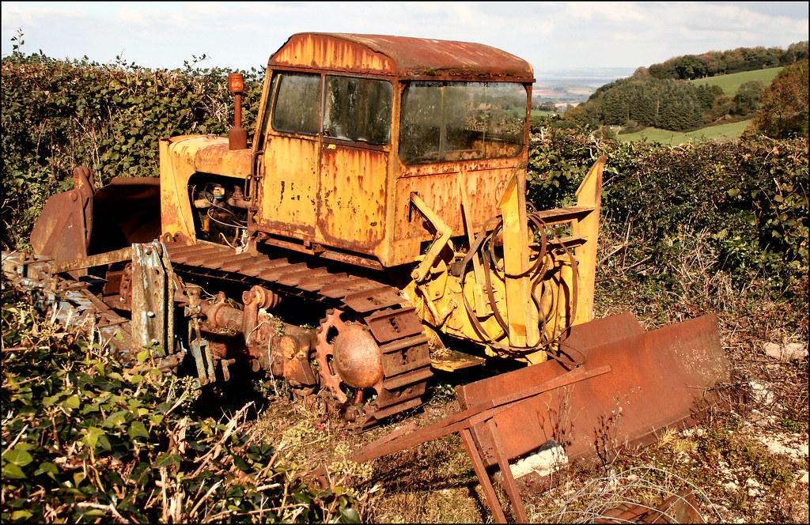
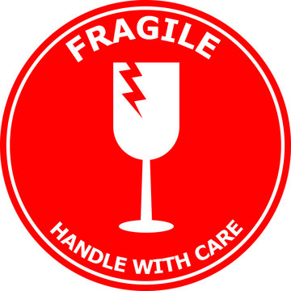
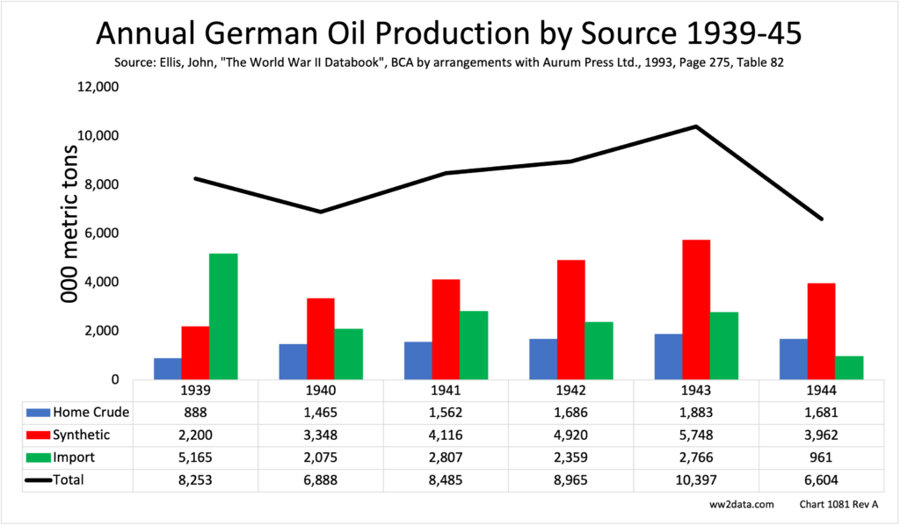
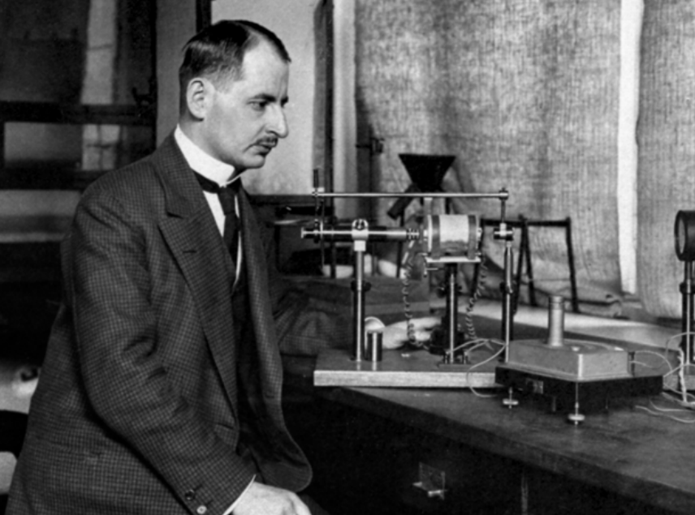
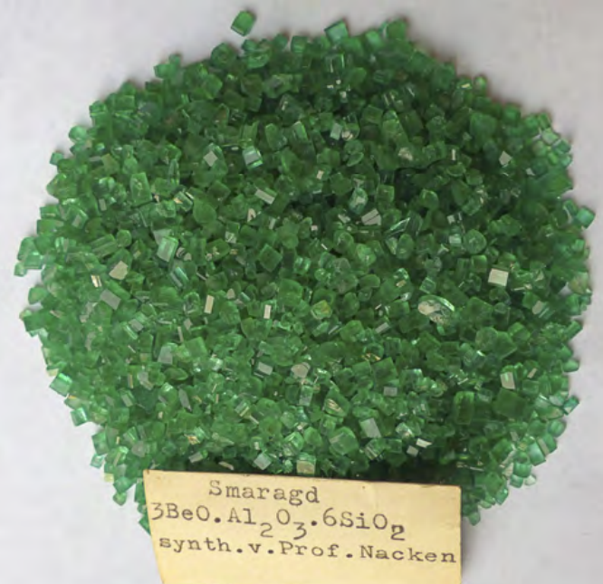
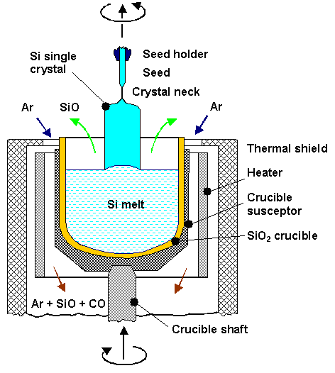

WW2의 수정 이야기 (6) - 유보트와 연금술
게시: 2024-10-31T06:30:47+09:00
<미국인들의 일처리 방식> 처음 미국에서 내놓은 수정 수입 확대안은 브라질에서의 수정 생산량을 늘리는 것. 그러기 위해서 미국인들이 생각한 방법은 지극히 미국적인 방법. 얘들은 별 생각도 없이 그냥 '기계화'를 추구하여 불도저와 굴삭기 등 온갖 노천 광산용 중장비를 잔뜩 브라질에 보내기로 함. 이미 소련과 영국에 lend-lease라는 이름 하에 엄청난 양의 탱크와 지프차, 트럭과 대포, 탄약과 식량 등을 퍼나르고 있었는데 브라질에 불도저와 굴삭기 수십 대 정도야 못 보내겠는가? 그런데 1차로 보낸 중장비들은 대서양을 횡단하다 유보트에 걸려 어뢰를 얻어맞고 꼬로록. 좌절하지 않고 다시 보내 결국 무사히 하역. 그런데 거기서부터가 진짜 문제. 수정이 나는 곳은 당연히 해안의 도시 주변이 아니라 내륙의 고원지대. 그런데 거기까지 불도저를 어떻게 보내지? 길이 없어서 보낼 수가 없음. 안 되면 되게 하라! 어차피 불도저에도 무한궤도가 달려있지 않나? 그리고 불도저가 원래 길 뚫는 장비야! 이 정신으로 어떻게든 몇 대를 어렵게어렵게 고원 지대 근처까지는 보냈음. 그런데 결국 거기까지. 현지에 불도저 몇 대 보내는 것도 그렇게 힘들었는데, 이 불도저가 물처럼 마셔대는 연료를 보급할 방법이 없다는 사실을 뒤늦게 깨달았던 것. 결국 이 불도저들은 아무 쓸모없이 현지에서 녹만 슬었다고. 미국인들의 일 처리 방식을 보면 얘들이 전쟁에 어떻게 이긴 것인지 신기.

미국에서는 다시 수정 원석 공급 개선 방안을 연구해봤는데, 현실적인 개선 방법은 브라질 현지에서 전자부품용으로 쓸 만한 원석과 버려야 할 원석을 골라내는 부분으로 판단되었음. 결국 미국은 감정사들로 팀을 꾸려 브라질 리오(Rio)로 보냈고, 거기서 쓸 만한 원석들만 수십 톤을 솎아내어 선적. 그러나 이 소중한 화물을 실은 화물선은 리오 항구 밖을 벗어나자마자 또 독일 유보트에 격침됨. 이 사건 이후 수정 원석은 배로 실어나르지 않고 DC-3 화물기로 미국까지 실어보냄. 덕분에 수송비가 당시 가격으로 1파운드(0.453kg)당 2달러나 들었다고. 당시 이렇게 어렵게 확보된 수정 원석은 너무 소중한 것이라서 이 수정 원석을 담은 상자에는 '취급주의(fragile)' 딱지 뿐만 아니라 '이 화물을 거칠게 다루는 것은 중대한 전쟁 사보타지 행위'라는 경고문까지 붙었다고.

<코끼리도 춤추게 하는 자본주의> 이런 노력에도 불구하고 1943년 중반 정도가 되자 결국 브라질산 수정 원석 공급은 한계에 달함. 이젠 정말 끝장인가 싶었지만, 안 되면 되게 하라는 정신은 이럴 때에 빛을 발함. 여태까지 수정 공진기 제조에 사용되는 수정 박판은 최소 200g 이상 크기여야 했음. 그 이하의 크기는 가공도 어렵고 정확한 진동을 만들어내는 평면(face)을 찾아내기 어려웠기 때문. 하지만 이제 큼직한 원석이 바닥나자, 이젠 그런 200g 이하 크기의 원석들도 가공을 시작. 다행히 그때 즈음해서 X-ray를 이용하여 수정의 결정면 방향을 확인할 수 있는 방법이 개발된데다, 필요는 발명의 어머니라고, 공정 개선을 통해 작은 원석도 효율적으로 가공할 수 있는 자잘한 공정 개선이 이루어짐. 특히 자본주의가 여기서도 위력을 발휘. QCS에서 '작은 원석을 일정 수준 이상의 수율로 가공해낼 수 있는 업체에게만 수정 원석을 공급하겠다'라고 선언하자, 다시 손가락을 빠는 실업자가 될 것을 두려워한 전국 각지의 공장에서 치열한 노력을 하여 공정을 개선했던 것. 단, 이런 과정은 결코 시장에만 의존하지는 않았음. 어느 공장에서 어떤 방법으로 공정을 개선하여 성공했다는 것을 QCS가 문서화하여 전국의 모든 업체에 공유했기 때문에 가능했던 일. 자본주의가 좋다지만 뭐든 극단적인 것은 좋지 않음. <독일은 대체 어떻게?> 전에도 언급했지만, 수정 공진기를 이용한 무전기는 독일군이 먼저 사용하기 시작했음. 미국도 수정 원석 구하는데 이렇게 애를 먹었는데, 제해권을 전혀 가지지 못한 독일은 대체 수정 원석을 어디서 구할 수 있었을까? 당연히 못 구했음. 전쟁 발발 이전에 수입해놓은 원석 및 어쩌다 밀수든 뭐든 어떻게든 구해지는 약간의 원석 밖에는 없었음. 다행인지 불행인지 독일의 공업 생산력은 미국에 비하면 형편없었기 때문에, 그렇게 쌓아둔 원석은 결국 바닥 났지만 미국처럼 재빨리 바닥 나지는 않았을 뿐. 결국 독일군은 수정 공진기를 이용한 우수한 통신 품질의 무전기 생산에 무척이나 애를 먹고 있었음.

(WW2 동안 독일이 사용한 석유의 절반 정도는 모두 석탄을 재료로 합성해낸 것이었고, 특히 항공기용 가솔린은 92%가 합성 가솔린이었다고. 위 그래프는 독일의 연도별 석유 생산량. 천연 석유는 루마니아 등의 유전 지대를 장악한 덕분에 약간이나마 나온 것.) 하지만 그냥 그렇게 포기할 독일이 아님. 독일은 어차피 석유도 안 나는 나라지만 석탄을 가공하여 합성 석유를 만들어 전쟁을 수행했음. 그러니까 (어차피 quartz = 석영 = 모래니까) 수정도 합성해낼 수 없을까? 라고 생각한 것이 무리가 아님. 실은 미국도 브라질산 수정 원석이 슬슬 바닥을 드러내자 합성 수정을 만들기 위해 많은 연구를 진행시키고 있었음. 결론부터 이야기하면 결국 WW2 기간 중에는 미국도 독일도 어느 누구도 전자 소재용 수정 결정을 합성해내는 것에는 실패. 그러나 그 중에서 가장 성공에 가까운 연구 결과를 낸 것은 바로 독일. 라카르트 나켄(Richard Nacken)이라는 광물학자는 일찍부터 결정학(crystallography)에 전념하여, 1920년대에는 에머랄드 결정을 합성해내는 것에 성공. 그러니까 사실 이 분도 처음부터 전자공학의 발전과 독일의 승리를 위한 우수한 무전기를 만들겠다는 생각은 당연히 없었고, 이거 잘 하면 이게 현대적인 연금술이 될 수도 있겠다는 생각으로 보석 합성에 열을 올렸던 것. 그러나 당시 기술의 한계 때문에 이렇게 만들어진 에머랄드 결정은 크기가 너무 작아서 나켄을 부자로 만들어주지는 못했음.

(이 분이 나켄 박사님. 1907년 괴팅겐(Göttingen) 대학 조교 시절의 사진인데, 놀랍게도 이 때 이 분 나이는 고작 23세... 많이 노안이신 모양.)

(나켄 박사가 1920년대에 합성한 에머랄드 결정들. 지금은 나켄 박사의 후손들이 보관하고 있다고.) WW2가 시작되고 수정 원석의 공급이 딱 끊기자, 나찌 독일은 즉각 합성 수정 결정 연구에 관심을 가졌고 나켄에게 그 연구를 맡김. 처음에는 프랑크푸르트에서 연구를 시키다 전쟁이 격화되면서 연합군의 폭격이 심해지자 다른 곳으로 연구소를 옮겨주는 등 나름 공을 들이긴 했으나, 아무래도 이미 전쟁의 승패가 기울면서 나켄에게 주어지는 지원도 점점 줄어들었고 또 점점 심해지는 폭격 때문에 연구도 크게 방해 받음. 결국 그 상태로 종전. 미국에겐 다행스럽게도 나켄은 종전 후 서독 지역인 튀빙겐(Tübingen)에 있었음. 그의 연구 결과는 미군에게 그대로 넘어갔고, 이 연구 결과를 토대로 미국은 50년대 마침내 상업용으로 유용할 수준의 수정 결정체 합성에 성공. 현재도 수정 공진기는 손목시계나 탁상시계, PC 등 다양한 곳에 많이 사용되고 그 중에는 여전히 자연산 수정을 이용하는 것도 있긴 하지만, 대부분은 이때 개발된 방식으로 만들어진 합성 수정으로 만들어짐. 특히 미국내 전자 부품용 수정은 100% 합성 수정으로 만드는 것.

(요즘 반도체 이야기가 많지만 그 기초 소재인 실리콘 단결정을 키우는 것도 대략 저 수정 결정 합성과 비슷. 핵심은 녹은 상태의 뜨거운 규소를 천천히 식히며 잡아당겨 단방향 결정체로 키우는 것.)
아무튼 이렇게 많은 어려움을 겪으면서도 1943년 하반기 들어서면서 미국 QCS는 수정 박판 대량 생산의 기틀을 완전히 잡았고 수백만 개의 완제품을 이미 생산하여 무전기 공장에 원활하게 공급. 그러나 이때 영국의 미육군 제8 공군으로부터 엄청난 전문 하나가 날아들어와 모든 것을 뒤흔들어 놓는데...
(다음 주에 계속)